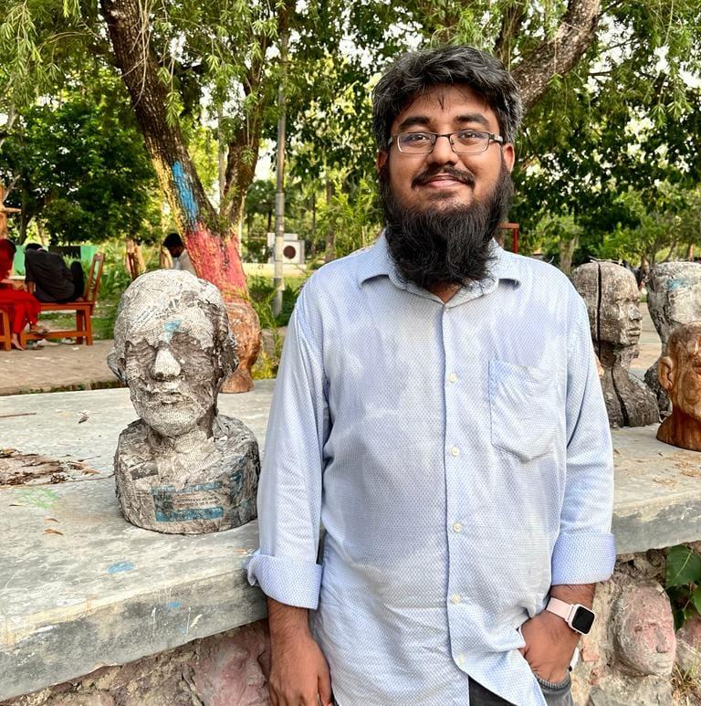

Hi there! My name is A. A. Noman Ansary, from Rajshahi, Bangladesh. But I prefer to be called as Showrav, my nick name.
I am a Data Scientist and Machine Learning Engineer specializing in LLMs, RAG pipelines, fine-tuned OCR, and NLP.
aanomanansary@gmail.com | aanomanansary.com.bd | LinkedIn | GitHub
Currently, I am working as a Data Scientist at AIDOCBUILDER INC., where I deploy CPU-optimized OCR pipelines for DHL logistics workflows and architect autonomous LLM-based AI agents for client RAG pipelines.
I am also a Research Assistant at Bengali.ai, where I co-developed bengalianalyzer, an open-source Python library on PyPI for Bengali text analysis and morpheme decomposition.
I also maintain the Editorials contributed to LightOJ, having authored 20+ algorithmic problem editorials on advanced data structures, graph theory, and dynamic programming. Want to contribute? Help us enrich our editorials.
Previously, I was a mathematics consultant and game developer at Banglar Math, creating educational games and authoring curriculum content integrated into national 5th–8th grade NCTB mathematics textbooks.
Earlier, I co-founded and served as Director of IT at Gulumulu, building full-stack e-commerce infrastructure scaling to 10,000+ orders.
While I prefer arts over programming or mathematics, I have been lucky to get medals at Bangladesh Mathematical Olympiads and the Bangladesh Physics Olympiad, as well as the Vice Chancellor's Award at BRAC University.
| Education Level | Institution | Passing Year |
|---|---|---|
| Secondary School Certificate | Govt. Laboratory High School, Rajshahi | 2015 |
| Higher Secondary School Certificate | Govt. Rajshahi Model School and College, Rajshahi | 2017 |
| Bachelor of Science in Computer Science | BRAC University, Dhaka (School of Data and Sciences) | 2023 |
While I acknowledge that this page looks really minimalistic, as a student of theoretical fine
arts,
I would like to quote Leonardo Da Vinci:
Simplicity is the ultimate sophistication.
I would also like to acknowledge the inspiration I got from freeCodeCamp for this minimalistic design.